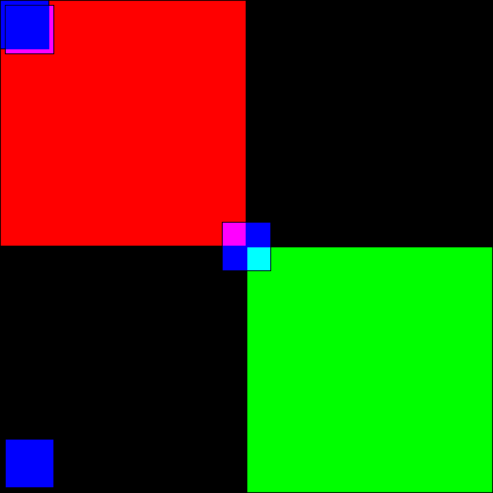
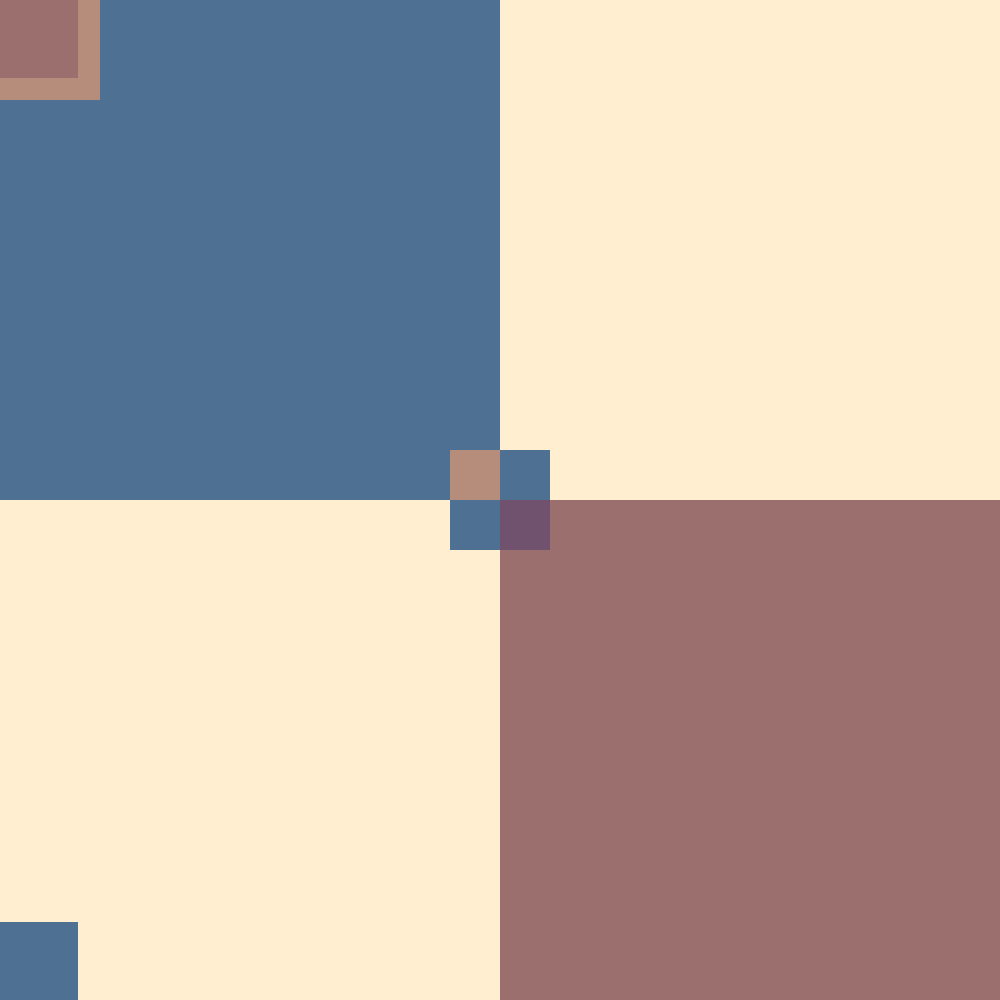
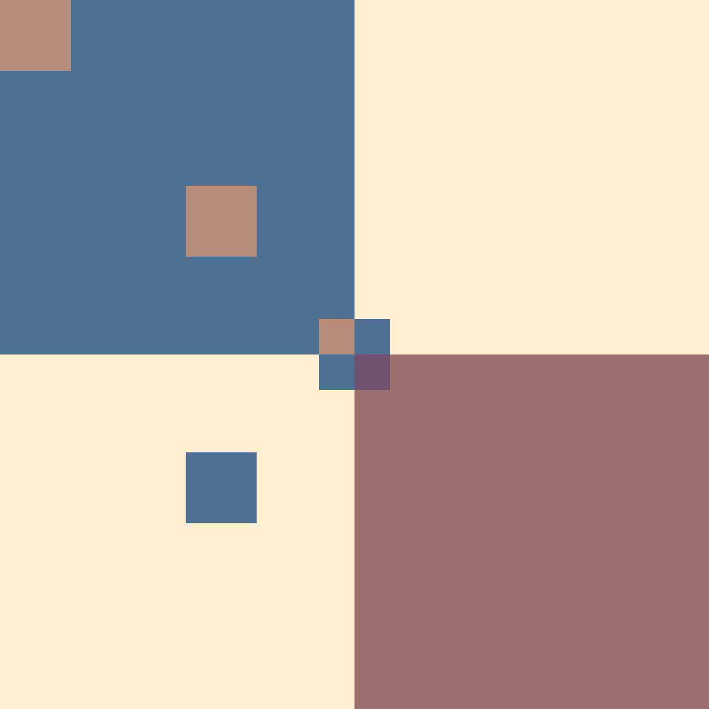
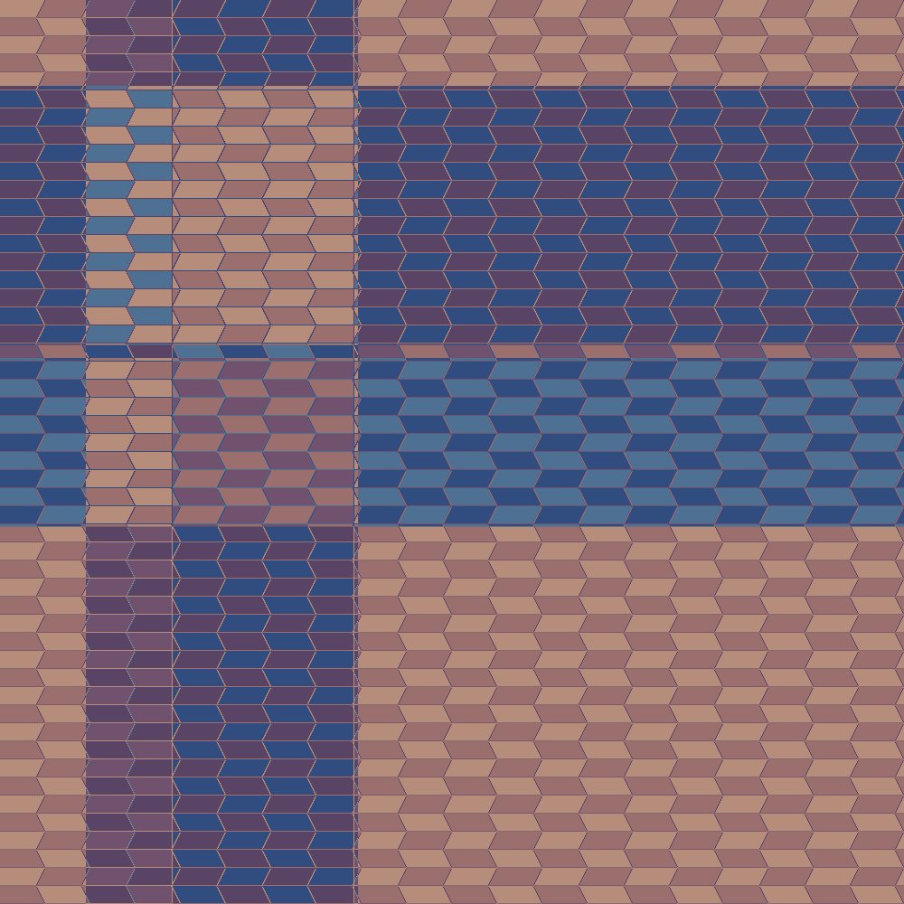
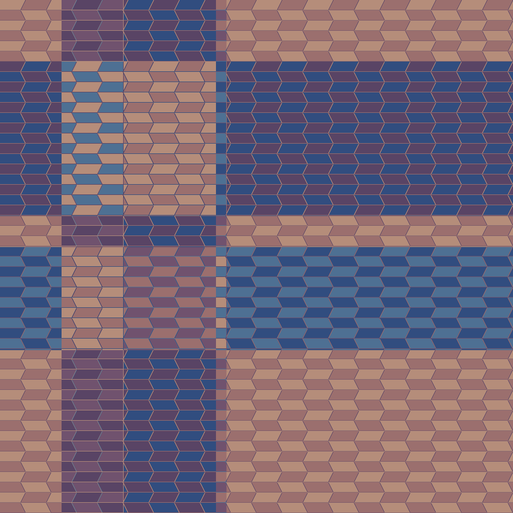
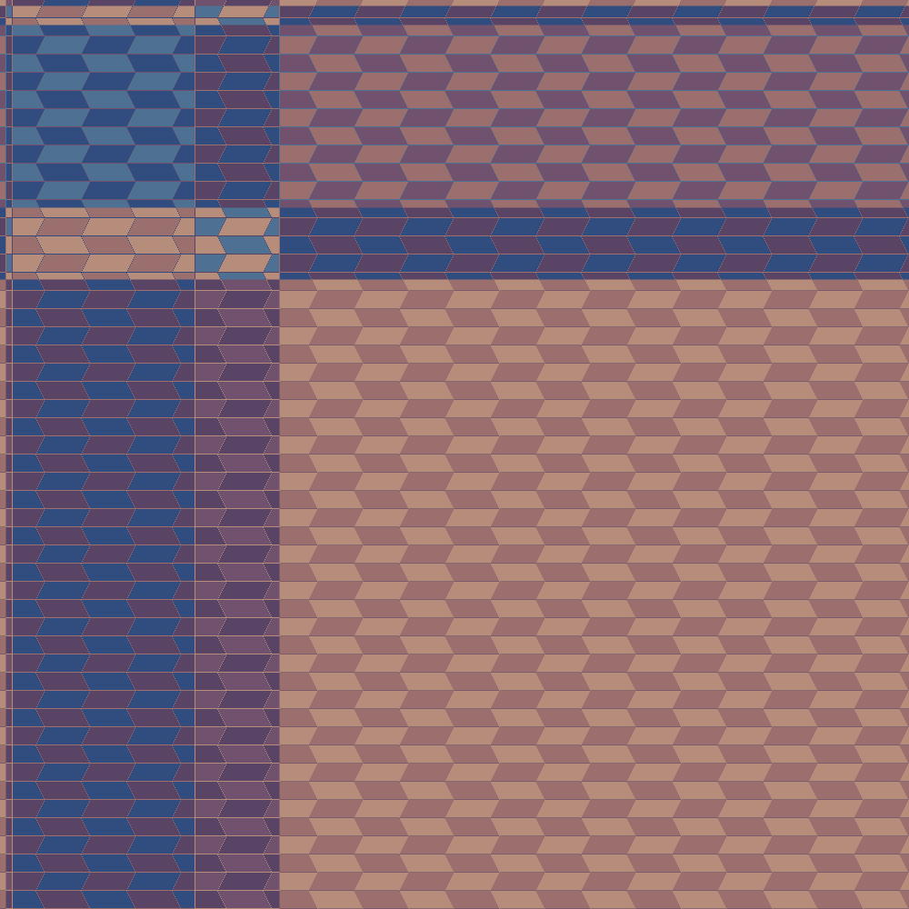

C03_ShaderExperiment
C03_ShaderExperiment
The goal here was to get the basic shaders to work, in order to do this I had to learn a little about shaders (which I found semi non-intuitive and the documentation is poor at best).
Algorithm
- Create a renderTarget with a depth and color buffer
- Create your shapes and color index assignments into the palette
- Each iteration
- Clear the buffer
- Draw your shapes with the shader
- Update your world state -draw the render target to the screen
The shader looks at each pixel matches its color against the palette, does the mod math from C01_ColorStudy_AddingIndex and C02_ColorStudy_2dcity and then outputs the new color to that pixel.
The Shader
Take the current color buffer state for the render target (the current image) as a texture. Then within that texture find where the present fragement is. After that we can modify the state by returninging a new color for that fragment.
Progression
Trying to understand how the shader and textures work

Applying a nicer color palette


Porting over C02



Having some issues with outlines etc
On Shaders
Shaders in OpenRNDR use a combination of GLSL (OpenGLs Shader language) and a few conventions around making fragement and vertex shaders. I still do not fully understand the system.
References
- https://guide.openrndr.org/#/06_Advanced_drawing/C04_Shade_styles?id=usage-examples
- https://learnopengl.com/Getting-started/Textures
- https://thebookofshaders.com/11/
I had to look at the ShaderError.txt output a lot to get an idea of what parameters are available to me
the sampler2d is still a bit of a mystery
https://medium.com/@grahamte/glsl-shaders-and-the-magic-of-graphical-rendering-ca94a578cf8b
Future Work
- Shader still has issues around the outline boundaries. Maybe don’t draw them then draw all of the outlines in bulk at the end if I want them